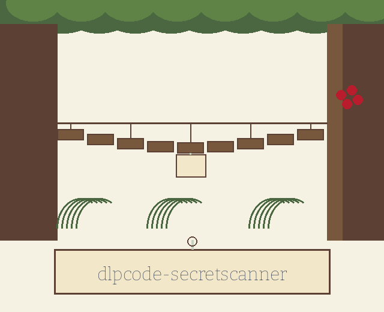
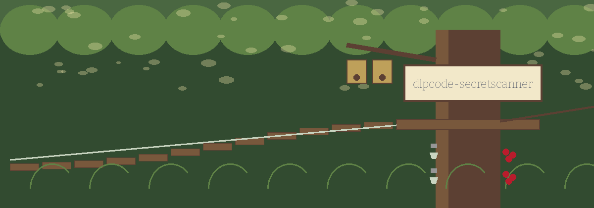

dlpcode-secretscanner: Jungle Canopy Research Station


Five Shapes on the Watch List
First Four and Last Four Stay Visible
Windows of One Hundred Characters
Unreadable Means Incomplete
Findings Alone Keep Exit Zero
First sheet: the job and its boundary
dlpcode-secretscanner: Jungle Canopy Research Station states the job plainly. The program scans one code file, or a whole directory tree walked without exception, matching text against five written pattern shapes for secrets that should never have been committed. What it finds, it prints in the terminal: the file, the kind, a masked form of the match, and a highlighted window of the surrounding code. It edits nothing, deletes nothing, and writes no report file.
Second sheet: the five pattern kinds
No secret value, no sample line of code containing one, and no copied pattern string is printed on this sheet. An application key shape: thirty two to forty five alphanumeric characters in a run. An Amazon cloud identifier shape: a fixed four letter prefix followed by sixteen capitals or digits. An Amazon cloud secret shape: that same identifier shape, then within the following lines a run of forty key characters, a two part construction. A secret key shape: a short fixed prefix with a hyphen, then forty eight alphanumeric characters. A password shape: one of three password words, an equals sign or a colon, then at least six characters drawn from a broad symbol set, quotes optional around them.
Third sheet: the one need
Python 3, and Pygments at 2.16.1 or later, the single line of the requirements file. Pygments is imported at the head of main.py, so a machine without it cannot reach even the help text. That fact stands beside the requirement, at the same size.
Fourth sheet: install, repaired
On this site only, the organisation in the clone line is given correctly as ShadowGuard-AI, hyphenated: git clone https://github.com/ShadowGuard-AI/dlpcode-secretscanner. The README line names a different organisation altogether, and the repair is declared here rather than passed off as the original.
Fifth sheet: the working form
The working form the README never actually gives is: python3 main.py, then the path, then any options. The README usage line instead shows an executable named after the repo, which does not exist; this site prints the interpreter form and flags the substitution in the defects recorded here. The path is positional and compulsory.
Sixth sheet: controls in parser order
Path first, one file or one directory. Verbose second, short and long forms, a switch that lowers the logging to debug level, under which excluded files announce their skipping. Exclude last, short and long forms, taking a comma separated list of file extensions, empty by default. Exclusion compares the true suffix of the file, lowercased, against the list as supplied, so an entry written without its leading dot matches nothing at all. Help stands at the foot of the list, as usual.
Seventh sheet: the printout
A heading announces that potential secrets were found. Under it, each finding gives its file, its pattern kind, and its masked match, followed by the code window where one exists, and a rule of forty hyphens closes each finding. The window spans one hundred characters either side of the match. Its highlighting is chosen by the file name where Pygments can, and guessed from the content where it cannot, rendered in a dark terminal style named fruity in the code.
Eighth sheet: masking, corrected
Masking here is partial by design in the code. A match longer than eight characters keeps its first four and its last four characters visible, with asterisks filling the middle, so a finding can be matched against its source line by eye. A match of eight characters or fewer is hidden whole. Every pattern match inside a printed code window is masked by the same rule, not only the finding that produced the window. The README speaks of redaction without qualification; this sheet prints the qualification at full size.
Ninth sheet: the endings
A path that does not exist exits 1 at once. A path that is neither file nor directory exits 1. Any file the scan was asked to read and could not, including a file that fails to decode as utf-8 text, is counted unreadable: the run prints that the scan is incomplete, names each such file, and exits 1 after the findings are shown. Where nothing was found and nothing was unreadable, the terminal states plainly that no secrets were found. Findings by themselves change no exit code: a tree full of secrets, all readable, still exits 0. Further code limits stand on record: a token longer than forty five characters is reported in forty five character pieces; highlighting rereads the source file once for every finding in it.
Last sheet: licence, in two parts
The README licence line is printed as it stands in the preserved record below: Copyright (c) ShadowStrikeHQ. Separately, and labelled as a separate record, the LICENSE file at the repository root carries the MIT License, and its holder line gives a pen name first, a parenthetical given name with a single initial after it, and a handle last. The initial is not expanded anywhere on this site.
Defects and identity, recorded
Identity tally for the live README: ShadowStrikeHQ appears 2 times, once in the install line and once in the licence line. The correct hyphenated ShadowGuard-AI appears 0 times in the README. The unhyphenated form appears 0 times. The title heading restyles the repo name as dlpcode-SecretScanner, with capitals the repo does not use. None of these faults is silently repaired in the preserved record. The parameter list omits the positional path and lists the exclude flag with no description. No exit behaviour is stated in the README. The opening account credits code syntax analysis, while detection itself is pattern matching alone and syntax awareness enters only in the highlighting step after a match.
The preserved README record
 # dlpcode-SecretScanner Scans code for accidentally committed secrets (API keys, passwords, etc.) using regular expressions, prints each finding with its surrounding code highlighted in the terminal, and redacts the matched secret itself in that output. - Focused on This category centers on scanning code repositories or individual code files for sensitive information such as API keys, passwords, credentials, personally identifiable information (PII), and other confidential data that should not be exposed. The tools use regular expressions and code syntax analysis to identify potentially leaked secrets within source code. Code highlighting and context are essential for accurate analysis. Matched secrets are masked in every part of the output, including the code snippet around a finding. A run that cannot read a file it was asked to scan exits 1 and names the unreadable file, instead of reporting that no secrets were found. ## Install `git clone https://github.com/ShadowStrikeHQ/dlpcode-secretscanner` ## Usage `./dlpcode-secretscanner [params]` ## Parameters - `-h`: Show help message and exit - `-v`: Enable verbose logging. - `-e`: No description provided ## License Copyright (c) ShadowStrikeHQ